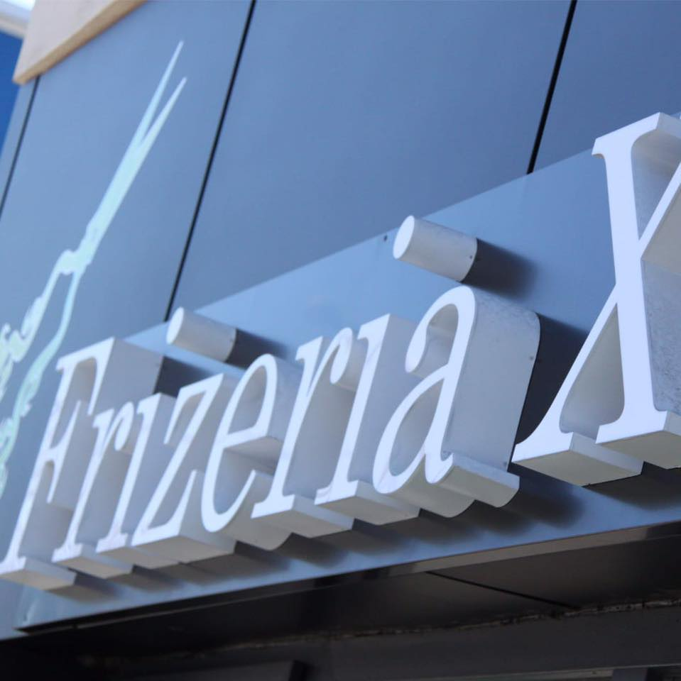

Tuns clasic & modern
Tunsoare clasică sau modernă, lucrată în funcție de forma feței și de cum îți place să porți părul.
Frizerie pentru bărbați · Pitești
Fade la milimetru, barbă lucrată cu răbdare și un styling care ține până data viitoare. În centrul Piteștiului, pe Str. Armand Călinescu — treci pe la noi.

Str. Armand Călinescu 16Cine suntem
Frizeria X este o frizerie pentru bărbați din inima Piteștiului, pe Str. Armand Călinescu nr. 16. Aici vii pentru un tuns făcut cu cap, o barbă aranjată la milimetru și un scaun în care nu ești grăbit.
Rezultatul se vede: clienții ne recomandă 100% pe pagina noastră de Facebook. Cine intră o dată pe ușă, se întoarce.
„Un tuns bun nu se explică — se vede când pleci pe ușă.”
Servicii
Tuns, barbă și styling pentru bărbați. Pentru prețul exact al serviciului dorit și pentru programare, dă-ne un telefon la 0749 523 026.
Tunsoare clasică sau modernă, lucrată în funcție de forma feței și de cum îți place să porți părul.
Fade curat, degradeuri fine și contur cu shaver — tranziții impecabile pe laterale și spate.
Conturarea și aranjarea bărbii cu răbdare, pentru un look îngrijit care se ține.
Așezarea părului cu produsele potrivite, ca să pleci gata de oriunde ai avea de mers.
Tunsori pentru cei mici, cu răbdare și mână sigură.
Suni, îți spui ora și treci pe la noi. Simplu, fără complicații.
💈 Vrei prețul exact sau o oră liberă? Sună la 0749 523 026.
Contact & Locație
Pentru orarul zilei și o oră liberă, sună-ne la 0749 523 026 sau scrie-ne pe Facebook.